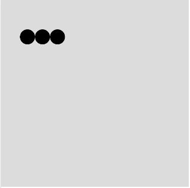
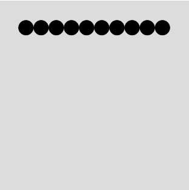
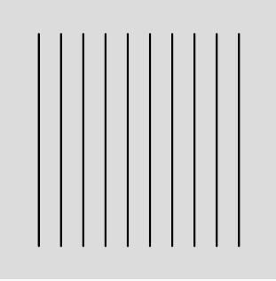
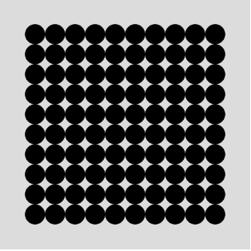

まずは図形を描く
基本図形のひとつである円を描くプログラムから始めます。どこに描くか、いくつ描くか、をプログラムを使って指示します。基本図形を描くには、Processing(p5.js)の描画関数を使います。円の描画と変数の活用
直径が20ピクセルの円を、(35, 50)の位置に描いてみましょう。まず、絵を描く画用紙にあたるキャンバスを、createCanvas()関数で作ります。キャンバスの用意は1回すればいいので、setup()の中に書きます。
このキャンバスの上に、描画用の関数が図形を描く際、デフォルトでは線が黒で、塗りが白で描画するようになっています。線の色や塗りを変更する関数が用意されています。リストT1-1-1では、線を描かず、塗りの色を黒に指定しています。
【リストT1-1-1】
function setup() {
createCanvas(250, 250); //250×250ピクセルの画面を用意
noStroke(); //輪郭線は描かない
fill(0); //黒で塗る
}
function draw() {
background(220); //背景はグレー
circle(35, 35, 20); // (35, 35)の位置に直径20の円を描く
}
デフォルトで背景は白ですが、この例ではbackground()関数を使って背景をグレーに塗っています。リストT1-1-1は図形は動かないので、draw()の中のコードをsetup()の中に書いて、draw()を削除しても同じ結果となります。
加えて、同じ大きさの円を(55, 50)と(75, 50)の位置に描いてください。

【リストT1-1-2】
function setup() {
..... // リストT1-1-1と同じ
}
function draw() {
background(220);
circle(35, 35, 20); //円を描く
circle(55, 35, 20); //円を描く
circle(75, 35, 20); //円を描く
}
この例では、直接座標の数値を指定して図形を描いています。これが基本ですが、柔軟性がありません。3つ並んだ円の位置を、例えば右に5ピクセル動かしたいとすると、3つの円のx座標の値35, 55, 75をそれぞれ40, 60, 80に変えなくてはならず、厄介な上、間違いが起こりやすいです。3つの円は、規則的に並んでいるので(間隔が20ピクセル)、次のように書くことができます。
【リストT1-1-3】
let x = 35;
function setup() {
..... // リストT1-1-1と同じ
}
function draw() {
background(220);
circle(x, 35, 20);
circle(x+20, 35, 20);
circle(x+40, 35, 20);
}
xは変数で、左の円のx座標を保持しておくためのデータ領域です。リストT1-1-3では、変数xを用意し、その中に35を入れています。letは変数を宣言するためのキーワードです。x+20は「変数の値と20の足し算をする」式です。+は足し算をする算術演算子です。
このように変数を使うと、その値を変えるだけで、例えば、let x = 50とすれば、3つの円全体を15ピクセル右に描くことができます。変数を活用するとわかりやすく、修正しやすい書き方ができます。
たくさんの円を描く
次に円を10個描くことを考えます。リストT1-1-2の3つの円に続けて、circle()を全部で10回指定すると、円が10個描けます。

【リストT1-1-4】
let x = 35;
function setup() {
..... // リストT1-1-1と同じ
}
function draw() {
background(220);
circle(x, 50, 20);
circle(x+20, 50, 20);
circle(x+40, 50, 20);
circle(x+60, 50, 20);
circle(x+80, 50, 20);
circle(x+100, 50, 20);
circle(x+120, 50, 20);
circle(x+140, 50, 20);
circle(x+160, 50, 20);
circle(x+180, 50, 20);
}
しかし、これは厄介です。10個程度ならなんとかコピーと修正でできなくはありませんが、100個となると別の方法が必要になります。上の例をよく見ると、関数circle()が10回実行され、その時の引数が規則的に変わっています(第一引数だけが20ずつ増加)。このように規則的に変化する処理を繰返す時に、役立つのが繰返しを行うfor文です。次のコードは、上のサンプルと同じ処理を行います。
【リストT1-1-5】
let x = 35;
function setup() {
..... // リストT1-1-1と同じ
}
function draw() {
background(220);
for(let i=0; i<10; i=i+1){ //iが10未満の間、iに1足しながら繰り返す
circle(x+i*20, 35, 20); //x座標はiの値に従って増える
}
}
変数ｉは繰返した回数を覚えておく場所で、その値が10になった時、繰返しを終了します。
演習問題

【問題T1-1-1】画面(250 X 250)に10本の線を描いてみよう。左の線の上の点の座標は(35, 30)、下の点は(35, 220)で、線の間隔は20です。
線を描く関数は、
line(始点のx座標, 始点のy座標, 終点のx座標, 終点のy座標);
です。

【問題T1-1-2】10個の円の行を、縦に(y軸方向に)10列(等間隔に10行10列に並ぶ100個の円を)描きましょう。10個の円を横に並べるfor文を、10回繰返します。